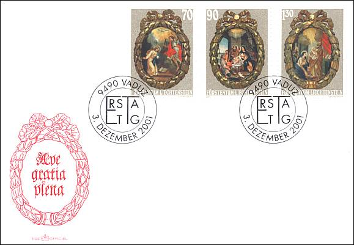
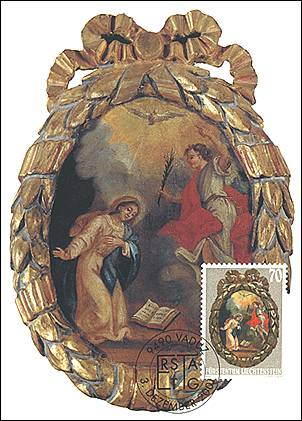
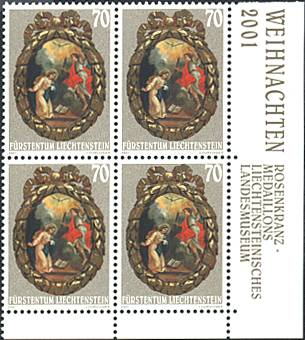
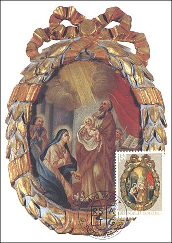
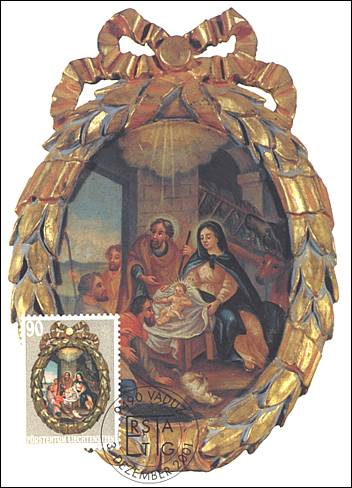

Christmas Stamps
Medallions in Wooden Frames
The three stamp designs of the 2001 Christmas set of Liechtenstein are taken from a 15-part cycle in the form of medallions in carved and gilded wooden frames, that has passed from private ownership into the collections of the Landesmuseum of Liechtenstein. The 15 pictures represent, in group of five, the mysteries of the Joyful, Sorrowful and Glorious Rosary - they are central images from the life and death of Jesus and his mother Mary.

The Medallion on the Rp. 70 stamp - the painting is done in tempera on wood - shows the Annunciation. On the left edge of the picture Mary is kneeling humbly before the Angel. In front of her a book lies open. On the right appears the Archangel Gabriel with the divine message. In his right hand he holds a lily branch with white flowers and with his left points to the Holy Dove.
 |
 |
The Rp. 90 stamp shows the central mystery of the Joyful Rosary, the birth of Christ. In the middle of the picture we see the impressive scene of the Nativity with Mary, Joseph and the newborn; two praying Shepard's are kneeling before the Christ Child. The Fr. 1.30 stamp shows Jesus at the presentation in the Temple. Old Simeon stands in the centre of the Temple with the child Jesus in his arms, his gaze turned upwards towards God's light which shines over everything. Mary and Joseph are kneeling before their divine child. A red velvet curtain hides the view into the Temple Inner Sanctum.
 |
 |
The photographs of the medallions were taken by Ursula Kuehne (Sevelen). The six-color halftone photogravure is by Hélio Courvoisier in La-Chaux-de-Fonds, Switzerland. This is the last series of stamps that the company has produced, before its closure in April 2001.
Text: after "Briefmarken aus dem Fürstentum Liechtenstein." The philatelic material is taken from webmaster's private collection.